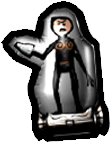
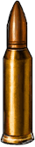
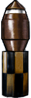
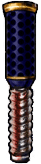

Grenade
Kurt can thrown the basic grenade at his enemies to create
concussive damage. The distance the grenade is thrown depends
on the upward angle at the time of launch. Be careful because
Kurt can be damaged by his own grenades.

Dummy Decoy
Kurt can throw the Dummy Decoy into the battlefield in order to
confuse his enemies. Being of slightly dim intelligence, the Aliens
aren’t able to tell the difference between Kurt and his decoy. In
fact, they prefer to shoot the decoy, because of its satisfying
response to their attacks.
Cloak
One of Kurt’s more effective items is the Cloak. The Cloak renders
Kurt invisible to alien eyes and allows him to run unscathed
through their defenses. Beware, as it has a limited life span.
The following Sniper Bullets and Items can be loaded into the Sniper
scope and shot with different effects!
|
Sniper Bullet
The basic sniper bullet travels straight to its target, causing damage with its impact.
|
 |
|
Homing Bullet
The homing bullet tracks its target.
|

|
|
Sniper Mortar
The sniper mortar follows an arcing path to its target. Its arcing trajectory can
be used to bomb those difficult to reach spots.
|
|
Sniper Grenade
The sniper grenade follows a direct path and explodes on contact.
|
|
Bouncing Bullet
The bouncing bullet ricochets off multiple walls on the way to its target.
|
|
Sniper Shield
The sniper shield absorbs damage from alien weaponry for a limited period of time.
|
 |